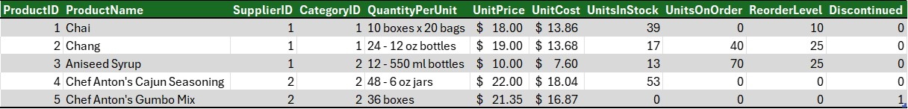
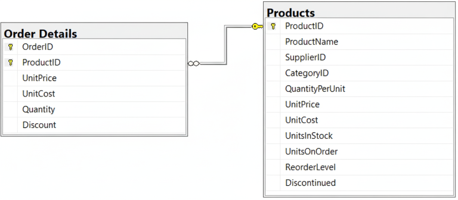

Introduction to Databases#
A database is an organized collection of data. Think of it as a digital filing cabinet where information is stored in a structured way, making it easy to access, manage, and update. This organization is crucial for everything from tracking inventory in a store to managing your contacts on your phone.
Databases versus Excel Spreadsheets#
Wait, you say! Excel can store information, and can do so in a structured way. What can a database provide that Excel cannot?
Databases impose structure. Database tables have a fixed format. They require certain types of information in each column. For example, a column designated for numbers cannot store text. Further, each row must contain the same columns. If you are disciplined, you can force such structure in Excel, but it is easy to deviate.
Databases can require tables to have relationships. If you have used VLOOKUP in Excel, you have an intuitive idea of relationships. Imagine that you have a table of customer orders and a separate table of customers. With this structure, you can easily merge the order information with customer information. VLOOKUP is designed for this. A database takes this a step further. It is possible to add a constraint to your database and require that each order in the orders table is linked to a customer in the customers table. Such a constraint ensures that you never get invalid order data, that is, an order with no associated customer. Excel cannot enforce such relationships.
Multi user access. Databases are designed to be accessed by multiple people at the same time. They not only permit thousands of people to log in simultaneously, but provide features to prevent conflicts. For example, say that you have $500 in your bank account. You have two checks outstanding, one for $300, and the other for $400. Further, say that both checks hit your account at the same time. The bank will process them one at a time, even if they arrive simultaneously. When processing the first check, the bank locks the data for your account while it is processing the check. The database will not allow it to process the second check until processing completes on the first check. If the bank tried to process both checks at the same time, each would clear because the balance, $500, is enough for either check. Since the database locks the account while one check is processing, the second check will (correctly) bounce. Excel does not provide such features.
For these and other reasons, companies store their most critical accounting and financial data in databases. They will often make copies of such data in Excel so they can work in Excel.
How Databases Work#
Databases store data in various ways, but they all share a core purpose: providing an efficient way to store and retrieve large amounts of information. The most common types use a structured approach to organize data.
Tables: A table consists of rows and columns. For instance, a customer table might have columns for name, address, and phone number, with each row containing the details of a different customer.
Fields (Columns): Each column represents a specific attribute or piece of information (e.g., first name, last name, or email address).
Records (Rows): Each row represents a single record or entry, representing a unique item or instance (e.g., one specific customer).
Relationships: Databases can link different tables together. For example, a customer table can be linked to an orders table using a unique customer ID, so you can see all the orders placed by a specific customer.
Table Example#

The image shows the first 5 rows of the Products table from the Northwind Traders database. Notice that:
Each column contains a specific piece of information, such as the product’s name and price.
Each row contains all the information about one product.
Finally, note that each product has an ID number in the first column. This must be unique, meaning that every product must have a different ID. This number is used to link to products in other database tables. This column is special and is called the primary key.
Relationship Example#

In the Northwind Traders database, one row is created in the Order Details table every time a customer orders a product. Instead of storing the product information directly in the Order Details table, the database simply stores the product’s ID. This serves as a link to the Products table. This reduces the likelihood of errors, as information about the product is stored in only one place, the Products table. This also reduces the size of the database.
The link, also known as a relationship, is shown in the figure above. Each table is shown as a box with its columns listed. A line is drawn between the corresponding columns in the two tables. This link is also a constraint. Every product ID in the Order Details table must match a row in the Products table. That means that an order must be associated with a product.
Principles of Database Design#
Once a company has decided what data it wishes to store, its next step is to design a database. This is not as simple as it may sound. The company must decide how many database tables, which information should go into each table, and the relationships between those tables. This is not easy, as there are often many ways to do this. However, all ways should adhere to some commonly accepted principles of database design.
Avoid data duplication.
For example, instead of storing a customer’s address in every order they place, you’d store it once in a Customers table and link it to the Orders table using a unique customer ID.
If you stored the customer’s address in the same table as orders, it is possible to get errors that make it seem as if the customer has multiple addresses. For example
1926 Forest Driveand1926 Forrest Drivewould appear as different addresses.If the customer changes his address, you only need to change it in the Customers table. However, if you had stored the address alongside each order, you would need to change it for each order.
Reducing data duplication decreases the size of the database. This, in turn, increases speed of retrieving data.
Data Integrity. We ensure data integrity by doing the following:
Each row of each table should have a unique identifier. This is called a primary key. This reduces the potential for data duplication.
If one table depends on another, then the dependent table must link to a row in the primary table. For example, say you have an orders table and a customer table. Each order must be associated with one row in the customer table. This principle is called referential integrity.
Interacting with Databases#
To interact with the data, users and applications use a specialized language. For many common databases, this is Structured Query Language (SQL). With SQL, you can write commands to retrieve exactly the data you need. For example, you could write a query to find the names and email addresses of all customers who live in a specific city.
Database Management Systems (DBMS)#
Databases are managed by a Database Management System (DBMS), which is the software that allows users to interact with the database. The DBMS handles all the behind-the-scenes work of storing, retrieving, and securing the data. When you use an website to, for example, book a flight, the website communicates with a DBMS to get the information it needs from a database.
Some common database management systems are MySQL, Microsoft SQL Server, Oracle, PostgreSQL, and Microsoft Access. In this class, we will work with Microsoft SQL Server.
Types of Databases#
There are several types of databases, each with its own structure and best use cases. The most common types include:
Relational Databases: These are the most traditional and widely used type of database. They organize data into tables with predefined relationships between them. They are excellent for managing highly structured data that requires strong data integrity, like financial records or inventory systems. They use a language called Structured Query Language (SQL) to manage and query the data. Examples include Microsoft SQL Server, MySQL, PostgreSQL, and Oracle.
NoSQL Databases: These databases are more flexible and don’t rely on the rigid table structure of relational databases. They can store a wide variety of data types, including unstructured data like documents, emails, and social media posts. They are often used for big data and real-time web applications. Examples include MongoDB, Cassandra, and Redis.
Graph Databases: These databases are designed to store and navigate relationships between data points. They are well-suited for applications like social networks and recommendation engines.
In this course, we will focus on relational databases.
Real-World Examples of Database Usage#
Databases are the backbone of countless applications and services we use daily. Here are a few examples:
E-commerce: Online stores like Amazon use databases to manage product information, customer orders, and inventory levels.
Social Media: Platforms like Facebook and Instagram use databases to store user profiles, posts, comments, and connections.
Banking: Financial institutions rely on databases to manage customer accounts, transactions, and other sensitive financial data.
Healthcare: Hospitals and clinics use databases to store patient records, medical histories, and appointment schedules.
Search Engines: Search engines like Google use massive databases to index the web and provide relevant search results.